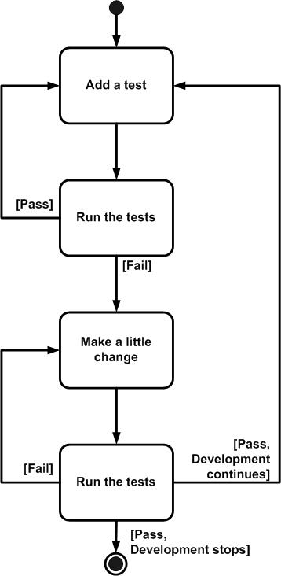

| Guideline: Test-first Design |
 |
|
| Related Elements |
|---|
IntroductionWith Test-First Design (TFD) you do detailed design in a just-in-time (JIT) manner via writing a single test before writing just enough production code to fulfill that test. When you have new functionality to add to your system, perform the following steps:
 Why TFD?A significant advantage of TFD is that it enables you to take small steps when writing software, which is not only safer it is also far more productive than writing code in large steps. For example, assume you add some new functional code, compile, and test it. Chances are pretty good that your tests will be broken by defects that exist in the new code. It is much easier to find, and then fix, those defects if you've written five new lines of code than fifty lines. The implication is that the faster your compiler and regression test suite, the more attractive it is to proceed in smaller and smaller steps. There are other other common testing strategies (listed here in order of effectiveness).
Good Things to Know1. An underlying assumption of TFD is that a unit-testing framework is available. Agile software developers often use the xUnit family of open source tools, such as JUnit or VBUnit, although commercial tools are also viable options. 2. Test-Driven Design (TDD) = TFD + Refactoring 3. TFD/TDD is commonly used with object-oriented business code, although this approach can be taken with procedural code, user-interface code, and database code. |
| Concepts | |
|---|---|
| Guidelines |
This program and the accompanying materials are made available under the |